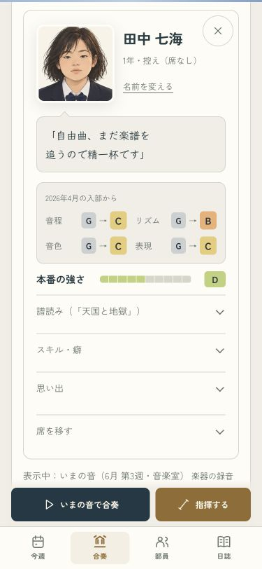
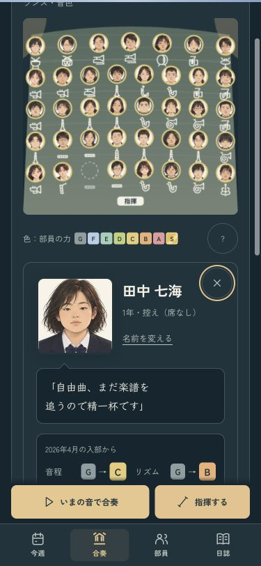

席を移したら、音と表示も切り替わる
「この人だけ聴く」の最中に控えへ移すと、古い演奏が鳴り続け、本人だけの試聴も残っていました。
- 移動時に古い再生と読み込み待ちを止める。
- 控えになった人や空になったパートの試聴を、全員へ戻す。
- カードの先頭で新しい席を確認。次の再生は新しい編成になる。
保存済みの録音はそのままです。375pxのライト・ダークで確認し、iPhoneにも反映しました。
部員カードで試す · 再生と移動の確認記録 · 前回の移動前の予告
控えへ移した後・ライト
ダーク